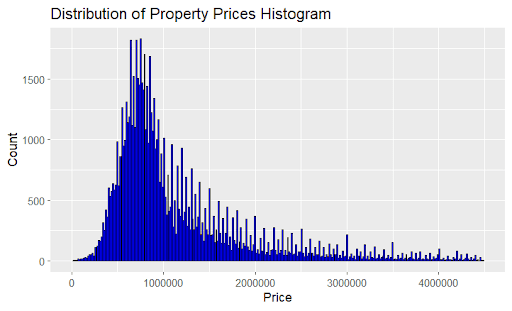
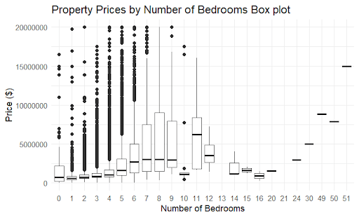

Home Price Prediction Project
The Home Price Prediction project aims to predict home prices in Los Angeles county using various machine learning and data mining techniques. The project involved data collection acquired from the website crawlers that were written by myself and my partner in R, data cleaning, data preprocessing, data visualizing and machine learning models.
Dataset Description
We acquired our data from two separate websites in order to provide insight from two independent sources. This is to prevent skewed or biased data which may be incurred from using a singular knowledge base. The two websites we set our sights on were redfin.com and compass.com using website crawlers written in R, with one crawler written by each. The data gathered from the two crawlers were formed into separate data frames, listed with its address, zip code, number of bedrooms, number of bathrooms, area in square footage, and the price it sold. We gathered the data of sold homes from the past two years to mitigate the disparity of home prices throughout many years, since home prices have been in a steep incline since 2020 and would have a big effect on the accuracy of the machine learning models. We then cleaned the data and prepared it to merge together.
Initially, one dataset had gathered over 62,000 rows and the other dataset gathered over 24,000 rows of data. After the data preprocessing, our data set consisted of over 82,000 total rows and 6 columns. The 62,000 rows of data were gathered from the listings on redfin.com and the 24,000 rows of data were gathered from the listings on compass.com. Both of these listings contained housing data from Los Angeles county as a whole. The data frame was created from the data scraped on these websites in February, 2024.
Table 1: A subset of the homes dataset post-processing
| address | zip_code | num_bed | num_bath | home_area | price |
|---|---|---|---|---|---|
| 2602 Ladoga Ave Long Beach | 90815 | 3 | 2 | 1394 | 987000 |
| 25909 Burke Pl Stevenson Ranch | 91381 | 4 | 3 | 3058 | 1130000 |
| 220 S Berkeley Ave Pasadena | 91107 | 2 | 2 | 956 | 820000 |
| 7838 Ellenbogen St Sunland | 91040 | 3 | 2 | 13994 | 945000 |
In the process of data cleaning, we encountered many issues with our data set that needed to be dealt with. These issues included; missing values, numeric values that were strings, mixed measurements (sq ft and acres) and outliers. For our missing values in the bedroom and bathroom column, we decided to use the median of the respective columns to fill in the missing values due to median being robust to data that is skewed. Since we had a lot of data that were outliers, with homes in the higher end having over 15 bedrooms and bathrooms. In regards to data missing home area values, we had a total of 142 instances and decided to use a linear regression model to fill in these values. Finally the data with 3 or more missing values were completely dropped from the data set to reduce inaccurate real world data, to preserve the integrity of the data set and to prevent any false patterns that may arise. Our data set had a total of 74 instances with 3 or more missing values that were dropped from the set.
Isolation Forest was used to identify and remove outliers in the data. To visualize how idolation forest affected our data, a price to home area chart was created before and after using isolation forest shown in Figure 1.


Figure 1: Scatter plots showing the before and after isolation forest on our data set.
To gain a better understanding of the data, we decided to generate visualizations of certain catagories. Below are figures, visualizing some of the data, along with a brief description of each.
Figure 2a: Data Visualization, Count of Properties vs Property Prices Prices
Figure 2b: Data Visualization, Home Area vs. Square Footage Scatter Plot
To view more, the full paper is here or shown below and the source code here.